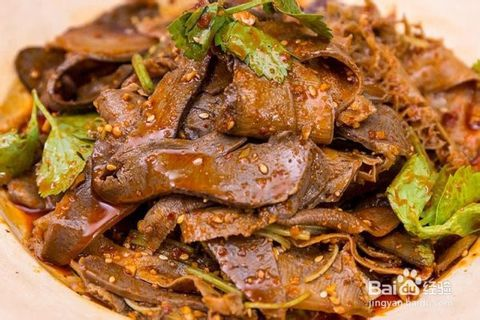

制作方法
将牛肉、牛杂洗净。牛肉切成大块，与牛杂一起放锅内，加入清水（以淹过牛肉为度），用旺火烧沸，并不断撇去浮沫，见肉呈白红色，倒去汤水。
锅内倒入老卤水，放入香料包（将花椒、肉桂、八角用布包扎好）、白酒和精盐，再加清水400克左右。
旺火烧沸约30分钟后，改用小火继续烧1.5小时，煮至牛肉、牛杂酥而不烂，捞出晾凉。
卤汁用旺火烧沸，约10分钟后，取碗一只，舀入卤水250克，加入味精、辣椒油、酱油、花椒面调成味汁。
将晾凉的牛肉、牛杂分别切成4厘米长、2厘米宽、0.2厘米厚的片，混合在一起，淋入卤汁拌匀，分盛若干盘，撒上油酥花生末和芝麻面即成。
- 